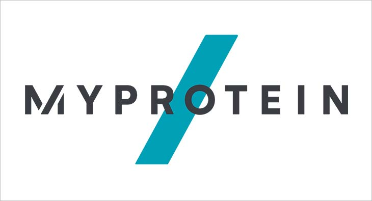

In this project I have clean housing data in SQL.
Nowadays everything is based on data however on average nearly 30% of the data is inaccurate and full of errors.
Cleaning data produces consistent, structured, and accurate data. Which leads to a better decisions for the company.
At this project I have removed the duplicates, Manage Incomplete Date, Manage incoherent data and removed irrelevant data.

Covid is a timely reminder that we need to be aware of Public health.
I conducted an analysis in SQL to understand better the spread and deaths due to COVID-19.
In this analysis I have performed queries to show Highest Infection Rates compared to Population, Countries with the highest Death Count as well as Continents with the highest Death Count.
Finally a view about the percentage of people vaccinated in the world.
A picture says more than a thousand words... Sounds like a cliche but it's True. Data visualization helps to give a better understanding of the data that we have. It also helps perform the analysis quickly and makes it easier to read.
In this Visualization, I made a presentation about the data explored in SQL. Analysis like geographic distribution, total deaths per continent, percentage of the population Infected as well as the forecast of the population infected are displayed on this Tableau Project.

he main objective of this Data Visualization is to show a user interactive Data Visualization about Netflix.
n this analysis, I used calculated Field, parameters to obtain all of the necessary data.
Web Scrapping with Python

The main objective of this Web Scraping is to extract information from the Myprotein website.
For this project, I have a process structure to extract the data from different products and insert it into a CSV file.